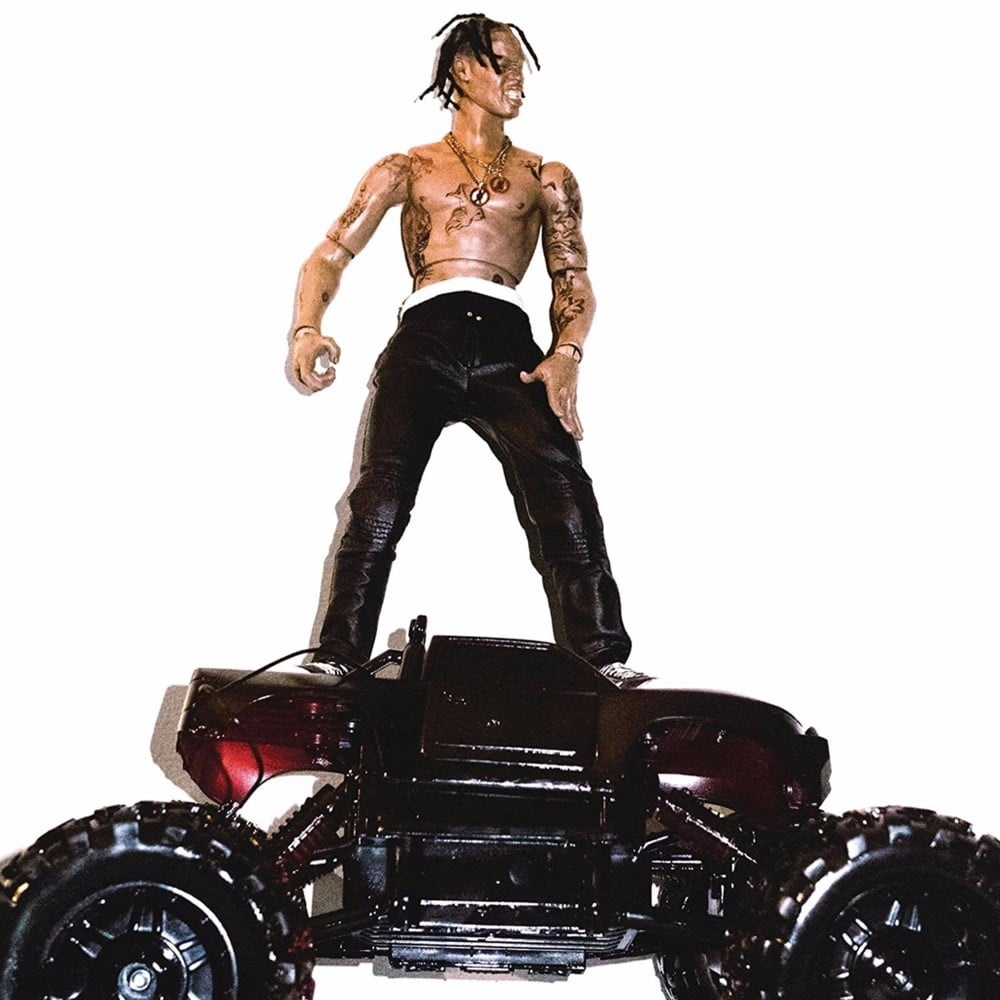

Informacion
Rodeo es el álbum debut del rapero estadounidense Travis Scott. Fue lanzado el 4 de septiembre de 2015, por Grand Hustle Records y Epic Records. El álbum cuenta con apariciones especiales de Quavo, Future, 2 Chainz, Juicy J, Kacy Hill, The Weeknd, Swae Lee, Chief Keef, Kanye West, Justin Bieber, Young Thug y Toro y Moi. El álbum fue apoyado por dos sencillos: "3500" con Future y 2 Chainz, y "Antidote". El álbum debutó en el número 3 en el Billboard 200 y vendió 85.000 copias en su primera semana. El 23 de diciembre de 2016, el álbum fue certificado oro por la Recording Industry Association of America (RIAA) por ventas de más de 500.000 copias en los Estados Unidos. El 28 de julio de 2020, el álbum fue certificado platino por la RIAA.
Tracklist
- Pornography
- Oh My Dis Side
- 3500
- Wasted
- 90210
- Pray 4 Love
- Nightcrawler
- Piss On Your Grave
- Antidote
- Impossible
- Maria I'm Drunk
- Flying High
- I Can Tell
- Apple Pie